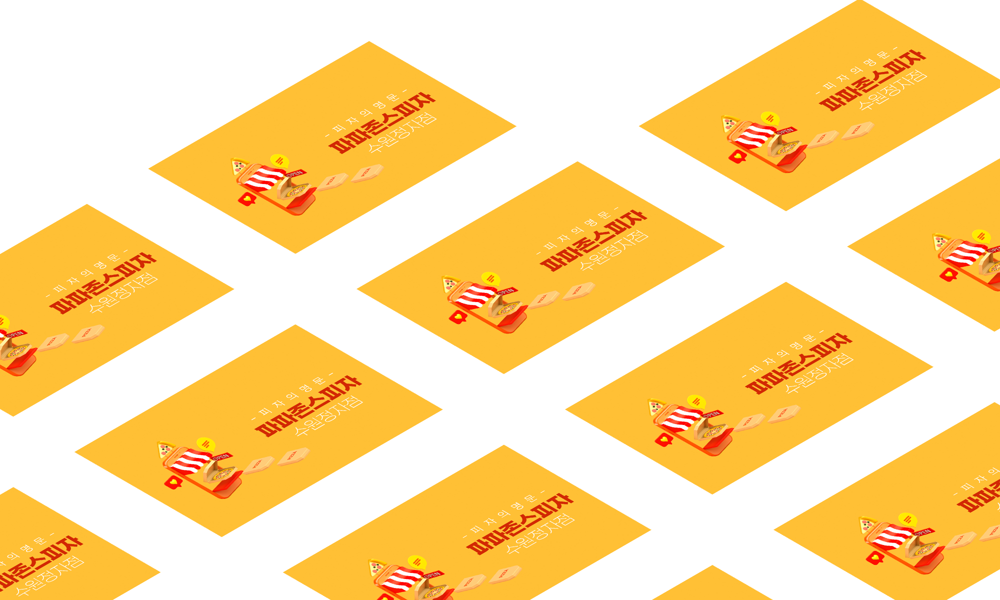

뒤로 가기
Web Banner
Visual Design
PAPA JONES
수원 정자점 어플 광고
Application AD
근무지(ok114)에서 작업한 자체 어플 광고 디자인 작업물으로
피자하면 떠오르는 컬러 두 개를 메인 컬러로 채택하고
누구나 한 번에 알아볼 수 있는 직관적인 이미지를 사용하여 제작하였습니다.
G마켓 산스
#ffc035
#d12503
Web Banner
Visual Design
에스에스시스템공조
시스템에어컨 업체 어플 광고
Application AD
근무지(ok114)에서 작업한 자체 어플 광고 디자인 작업물으로
취급 품목인 시스템에어컨의 이미지 컬러를 파란색으로 설정하고 이미지를 배치하여
고객님께 시원한 인상과 신뢰감을 드릴 수 있도록 디자인했습니다.
G마켓 산스
#007dfe
#d0e6fe
Web Poster
Design
paradise regained
웹 전시회 레디메이드 포스터 디자인
Ready-made Design
Coca-cola journey 웹사이트 리뉴얼 프로젝트로
코카콜라의 메인 색상인 레드와 화이트 투톤을 조화롭게 사용할 수 있도록 했고
해당 브랜드의 트레이드 마크인 곡선을 적극적으로 활용하여 디자인했습니다.
Noto Sans KR
#ecacd6
#117b8d
Photo Card
Design
이달의 소녀
photo card Design
Resposive Web
Coca-cola journey 웹사이트 리뉴얼 프로젝트로
코카콜라의 메인 색상인 레드와 화이트 투톤을 조화롭게 사용할 수 있도록 했고
해당 브랜드의 트레이드 마크인 곡선을 적극적으로 활용하여 디자인했습니다.
Noto Sans KR
#f9c1ab
#E11119
Web Poster
Design
기관 웹포스터 디자인
민관학 원탁토론회 웹 포스터
Web Poster
Coca-cola journey 웹사이트 리뉴얼 프로젝트로
코카콜라의 메인 색상인 레드와 화이트 투톤을 조화롭게 사용할 수 있도록 했고
해당 브랜드의 트레이드 마크인 곡선을 적극적으로 활용하여 디자인했습니다.
Noto Sans KR
#ffc035
#d12503